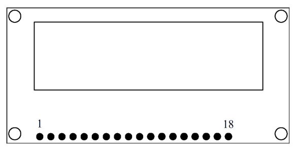
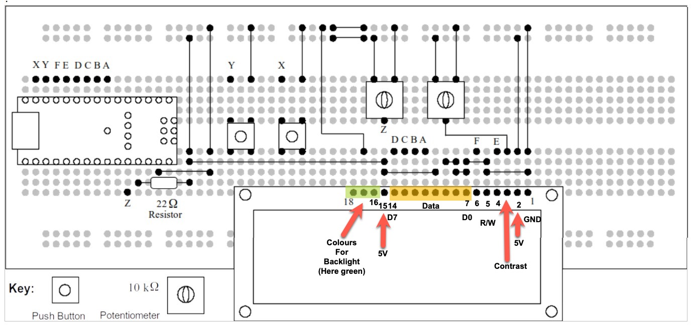
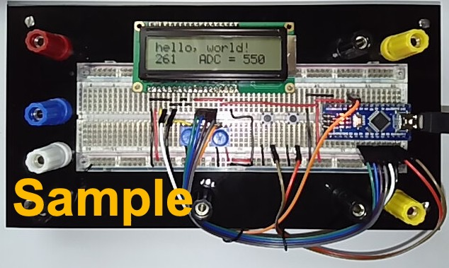

Experiment 5: LCD Display Panel#
Introduction#
Experiment 5 introduces two new concepts. A new piece of hardware, the alphanumeric liquid crystal display, and a new software structure, the library.
Alphanumeric Display module#
You will be given an Alphanumeric Display module. This module can display two lines of 16 characters, using any characters in the ASCII standard list plus several special characters and up to eight user-defined characters. The interface to the display module is straightforward. Characters are written directly to the display and appear at the cursor position. Command characters can be sent which set the mode of operation of the display and allow the cursor to be moved around.
Direct information on this module can be obtained from the Farnell website, part number 3759026. Displays of this type are all based on a complex integrated circuit produced by Hitachi, part number HD 44780.
One complication of using the alphanumeric display module is the small number of input-output pins on the Arduino Nano. A special mode of operation is employed, in which eight-bit data bytes are transferred as two, four-bit “nibbles”. A demonstration programme that is available to you shows you how numeric values and character strings can be displayed.
A copy of the data sheet for the display and a list of ASCII characters] can be found on Canvas.
Pinout of the Alphanumeric Display module#
{kind=link}

Fig. 154 LCD Display Panel and its pinout.#
There are 18 pins arranged in a straight line, which allows the module to be plugged into a standard breadboard. The pins are grouped as eight for data, three for control, and three for power and contrast. A further four pins (pins 15 to 18) are used to illuminate the RGB “back light”. The functions of the pins are as follows:
Pin 1: Ground/Zero Volts
Pin 2: Supply positive, typically 5 V.
Pin 3: Contrast pin. Connected to a potentiometer to set the display contrast.
Pin 4: Register Select: an address line, selecting either command or data.
Pin 5: Read/Write: logic “0” for writes, logic “1” for reads.
Pin 6: Enable: writes a command or data to the display.
Pins 7 to 14: Data pins D0 to D7 respectively.
Pin 15: +5 V +5V connection for backlight.
Pins 16 to 18: zero volts for backlights red, green, blue respectively.
Library for LCD#
Many devices such as the LCD require some complex software. A library, in this context, refers to additional code which is linked into the main programme using “#include” and is accessed using specific commands. In this case, the LCD library is included as follows:
#include <LiquidCrystal.h>
Some libraries, such as the SPI and IIC libraries, are present in the standard version of the Arduino IDE. Other libraries must be added using “Tools/Manage Libraries” from within the Arduino IDE.
Here are some examples of the extra commands that the library contains:
lcd.setCursor(0, 1);
This command moves the cursor of the LCD to the start of the second line of the display.
lcd.print("hello, world!");
In this case, the alphanumeric string, variables, or arithmetic expression contained within the brackets is printed at the current cursor position.
The best way to understand how the LCD hardware and software work, is to build the circuit that follows on plug-in breadboard and to try the example programme in Listing 9: LCD Panel Demonstration Programme..
{kind=link}

Fig. 155 Demonstration Circuit on Plug-in Breadboard.#
Functions of the Demonstration Programme#
As explained previously, the LCD module is connected in “4-bit mode”, to minimise the number of connections to the Arduino Nano processor. In addition to the 4 data bits, there are two command signals, Register Select (RS) and Enable (E). These are the absolute minimum number of connections between the LCD and the processor. An additional command signal, Read/Write, (R/W) is connected permanently to logic “0”.
There are two potentiometers on the demonstration board. One sets the
contrast of the LCD, which is necessary to adjust the correct balance
between the illuminated and dark pixels. The other potentiometer sets
the voltage on analogue input A7.
Two push buttons are provided, connected to digital inputs D10 and
D11. Note the use of pinmode in setup(), which turns on the
pull-up resistors associated with inputs D10 and D11.
Copy the text of the demonstration programme into a new Arduino sketch, and compile and upload in the usual way. When the programme is running, it should display the message “hello world!” on the first line. On the second line, the first few characters are a count in seconds since the board was reset. The remainder of the second line shows the message “ADC = xxxx”, where “xxxx” represents a number between 0 and 1023, as determined by the setting of the potentiometer. Pressing the push buttons should result in the characters “R” or “L” being displayed near the end of the first line of the display.
The example code provides examples of how to set the display and write messages and variables. The example code can form the basis of the exercise that follows.
Task for Experiment 5#
The exercise for this experiment is to configure the demonstration board as a bar graph display, similar to the exercise in Experiment 3. But in this new exercise, the bar graph is not a line of LEDs, it is the top line of the LCD. There are 16 character positions, so that each “block” of the bar graph will correspond to 64 values from the ADC (which is 10 bits, so there are 1024 possible values).
Here is the required display. Retain the line “ADC = ” followed by the ADC value displayed on the second line, this will be useful when testing your programme.
ADC value = 0; Display = “ ” (all spaces)
ADC value = 1-63; Display = “# ” (only first block)
ADC value = 64-127; Display = “## ” (first two blocks)
and so on until:
ADC value = 1018-1023 Display = “#################” (all 16 blocks)
The “#” character is only here as an example. A more suitable character
is available on the LCD, which corresponds to ASCII code 255 and appears
as a rectangle of 7 by 5 pixels. It can be printed as
follows:
lcd.write(byte(255));
There are a number of ways to achieve this programme. One would be to “trap out” the zero value, and print a line of 16 space characters, then divide the ADC value by 64 and use this as an index in a character array.
An alternative would be to write a programme loop which decrements the scaled ADC value and printing “#” until the result is zero.
Assessment of Experiment 5#
As with previous exercises, the plug-in breadboard should be photographed with your student card and added to your laboratory diary. A listing of your programme should be included, with plenty of comments. A programme without comments is of only limited value, as nobody else can follow it!
Appendix A: Code Listing#
Listing 9: LCD Panel Demonstration Programme.#
View and download the code from GitHub gist lcd_panel.ino
Appendix B Photograph of Prototype Board with LCD Panel Display#
The following photograph (Fig. 156) has been provided by Dr Davies who created this experiment.
{kind=link}

Fig. 156 Photograph of the Arduino Nano and LCD Display Panel with example programme running.#